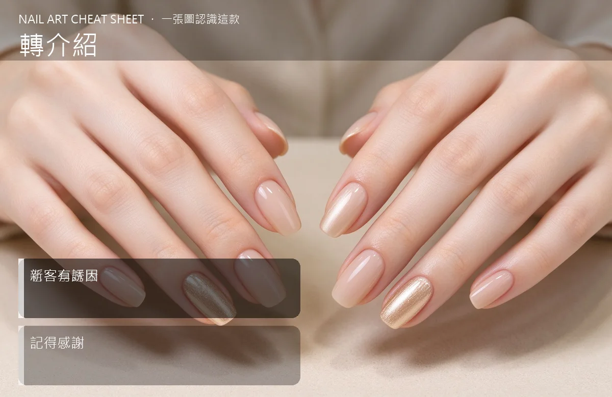

美甲轉介紹是什麼？中階入門攻略
老客帶新客是最便宜的行銷——但你要給她『帶人的理由』和『被感謝的感覺』。
轉介紹原理與辨識重點：美甲師不說的老客享好康
轉介紹的邏輯很簡單：你的老客本來就喜歡你，她只是沒有『動力』主動介紹。你設計一個機制——例如她介紹一個朋友來，兩人都折 200、或她下次回補免費加一個設計款——她就會很自然地在下午茶時提起『我常去的那家美甲師不錯』。
誰適合做轉介紹？老客帶新對號入座
已經有幾個固定常客、但都沒幫你帶朋友的美甲師；或想低成本增加客源的人。
轉介紹美甲施作步驟：會員＋優惠
第一步：設計一個『雙贏』機制——例如「老客帶新客來，新客首次折 150、老客下次回補免費加價 200 的設計」。第二步：做完指甲當下，自然地告訴她這個活動（不要像業務推銷）。第三步：她真的帶人來了，當下就要謝她——一句「謝謝妳介紹朋友來！妳的折抵我幫您記下了」。第四步：一個月後，主動關心她的朋友做完之後的狀況。
轉介紹優缺點分析：美甲持久度與傷甲評估
| 優點 | 說明 |
|---|---|
| 轉介紹來的客人，信任度天生就高、客單價也比較好談；你的行銷成本幾乎為零。 | 是通用流派的招牌，中階就能上手 |
| 缺點 | 說明 |
| 設計太多規則會讓人看不懂；要簡單到她一句話就能講給朋友聽。 | 前置與三雷：①規則寫超複雜（三層四層折扣），客人看不懂就懶得介紹；②答應了獎勵卻在她帶人來時『裝沒事』；③轉介紹只給新客好處、老客沒感謝——她帶人一次就不會再帶。沒顧好會打折 |

轉介紹新手雷區：新客有誘因與常見錯誤
注意：三雷：①規則寫超複雜（三層四層折扣），客人看不懂就懶得介紹；②答應了獎勵卻在她帶人來時『裝沒事』；③轉介紹只給新客好處、老客沒感謝——她帶人一次就不會再帶。
轉介紹和其他美甲做法的差別比較
轉介紹跟『辦優惠活動』不一樣。優惠是『打折吸引路過的人』，轉介紹是『給信任你的人一個動力』。前者換來的是一次性客人，後者換來的是長久客源。
轉介紹美甲常見問題 FAQ
Q：獎勵要多大？ A：以「兩人都有感覺」為基準，不用很大。新客首次折 100–200、老客下次免費加一個小設計，就很剛好。太大會吃掉你的利潤。
Q：她帶朋友來，我要特別招待嗎？ A：不用特別打折到賠本，但可以多給一個小驚喜——例如送她一小罐指緣油。她下次就會主動介紹。
Q：要怎麼開口請她介紹？ A：最自然是做完指甲、她心情最好的時候：「如果身邊有朋友也想找美甲師，歡迎介紹過來哦，兩位都會有小禮物」。不要在她等費用結清時說，很像業務。